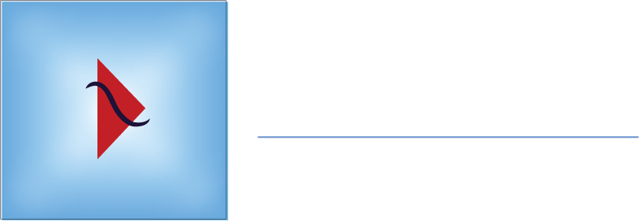

GDevCon ANZ #3 · September 2026
Building Right, Scaling Small
Anoop Nandakumar · CPE Systems NZ

"LabVIEW and TestStand are binary files — they don't work well with Git. Let's just stick to SVN."
Raise your hand if you've…
SVN vs. Git reality check
| SVN | Git | |
|---|---|---|
| Stores binary VIs | Yes | Yes |
| Text-diffs a VI | No | No |
| Graphical diff/merge via LVCompare / LVMerge | Yes | Yes |
| File locking | Native | Git LFS |
| Full history offline | No | Yes |
| Cheap local branches | No | Yes |
Binary vs. text is a diff tool problem, not a version-control problem.
Tamper-evident history + reviewed PRs into a protected master
"I'm just one person — why do I need branches?"
git checkout -b experiment; discard a failed idea in a second, no stray .vi copiesflowchart LR A[Dev A
feature WIP] --> T((trunk)) B[Dev B
half-done fix] --> T C[Dev C
refactor] --> T T --> R{Release?} R -- "trunk broken" --> X[Delay / hotfix
on top of WIP]
The same trap in Git: treating master like trunk and pushing raw edits straight to production.
master (production) → develop (integration) → feature/* (safe isolation)
%%{init: { 'gitGraph': { 'mainBranchName': 'master', 'showCommitLabel': false } } }%%
gitGraph
commit tag: "v1.0"
branch develop
checkout develop
commit
branch feature/daq-driver
checkout feature/daq-driver
commit
commit
checkout develop
branch feature/ui-refresh
checkout feature/ui-refresh
commit
checkout develop
merge feature/daq-driver
merge feature/ui-refresh
checkout master
merge develop tag: "v1.1"
branch hotfix/1.1.1
checkout hotfix/1.1.1
commit
checkout master
merge hotfix/1.1.1 tag: "v1.1.1"
checkout develop
merge hotfix/1.1.1
feature/* → develop: merge commit · develop → master: reviewed PR + tag vX.Y.Z · hotfix/* → master and develop
No direct commits to master · optional bugfix/* and release/*
You don't need a command line to be a DevOps engineer
Point any of them at LVCompare.exe and LVMerge.exe — VI diffs open in LabVIEW, not as unreadable bytes.
# .gitattributes
*.vi binary
*.vit binary
*.ctl binary
*.ctt binary
*.vim binary
# Git LFS (CPE repo template)
*.exe filter=lfs diff=lfs merge=lfs -text
*.zip filter=lfs diff=lfs merge=lfs -text
# .gitignore
*.aliases
*.lvlps
builds/LabVIEW 2025 Q1 compare improvements · 2025 Q3 comparison reports from the CLI
Live demo · Compare VI Improvements · Comparison Reports from CLI
Native sequence-file versioning — no external wrapper hacks
Live demo
Lessons from CPE Systems NZ · SVN → Azure DevOps Git for a large industrial test-equipment customer
23 hardware · 26 software · 1 shared library, migrated in January 2026
Git submodules group components into deployable test systems
SVN authors mapped to Git identities, so history stays traceable
One template for every repo · access limited per customer project · pilot first, then batch · protected master
Darren Nattinger's plugin-based demo framework — each demo is a demo_ / try_ VI pair
LabVIEW 2026 Q1 control drives these slides — locally from disk, or from GitHub Pages
Clean .gitignore, then switch branches in SourceTree / GitKraken and watch the deck change
Live demo · Web Browser Front Panel Control
GDevCon peers worth following up
.gitignore + .gitattributesmaster: every change through a reviewed PRdevelop; tag releases vX.Y.ZClone it now — link dropped in the GDevCon ANZ Discord
github.com/CPE-Systems-NZ-Limited/anoop-gdevcon-anz-2026
Thank you
Anoop Nandakumar · CPE Systems NZ
github.com/CPE-Systems-NZ-Limited/anoop-gdevcon-anz-2026